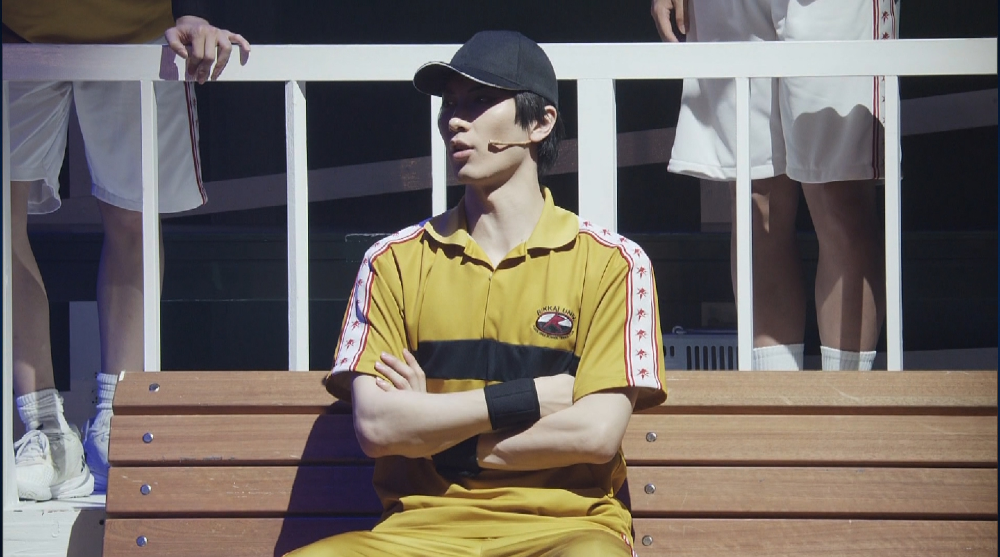
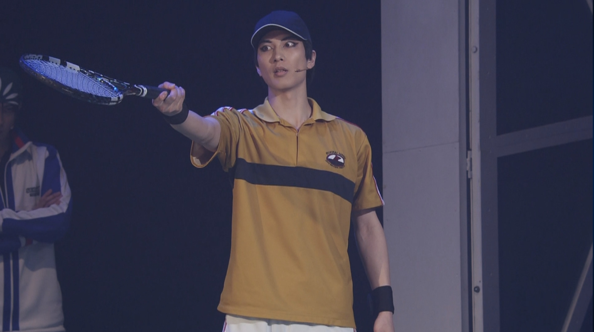
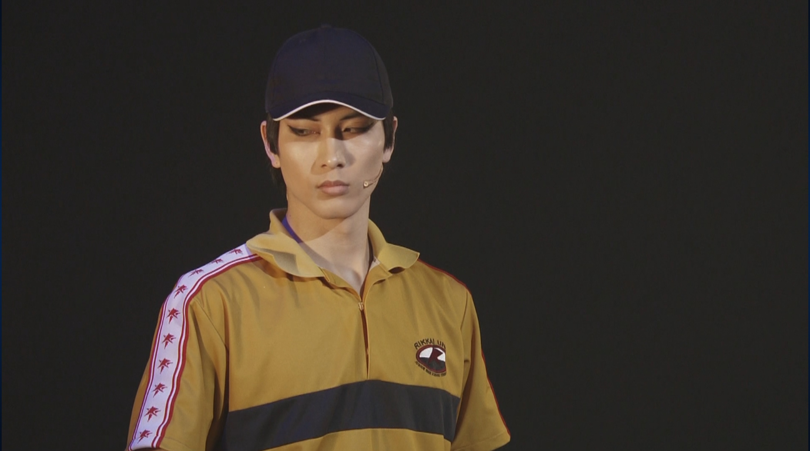

癖・兆候｜Observation Notes
観察概要
弦一郎はその厳格な性格が試合中にも徹底されており、一打一打に揺るぎない覚悟が宿る。
プレーでは一切の妥協を許さない。無駄を削ぎ落とした力強い打球、理詰めの配球、そして鋼のメンタルで貫かれている。
相手に情けをかけることなく、勝利のために必要な判断を冷静に下せるという点で、相手のみならず自チームのレギュラー陣も圧倒する。
プレーでは一切の妥協を許さない。無駄を削ぎ落とした力強い打球、理詰めの配球、そして鋼のメンタルで貫かれている。
相手に情けをかけることなく、勝利のために必要な判断を冷静に下せるという点で、相手のみならず自チームのレギュラー陣も圧倒する。
📷 記録ファイル（全3枚）


